O caminho inteiro para derrubar o OVNI e ganhar o enfeite de arma. Primeiro o resumo; cada etapa abre o detalhe quando você precisar.
Cada torre de rádio tem um botão com luz, na torre, ao lado ou atrás dela. Toque num círculo do mapa para ver a foto daquele botão.
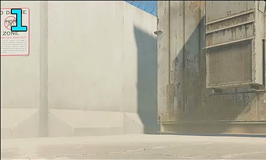
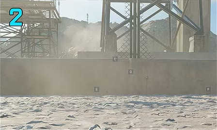
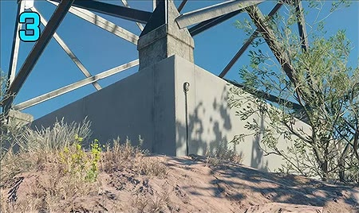
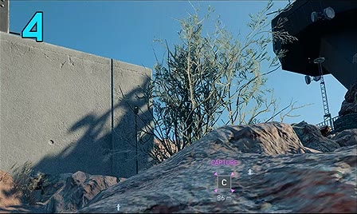
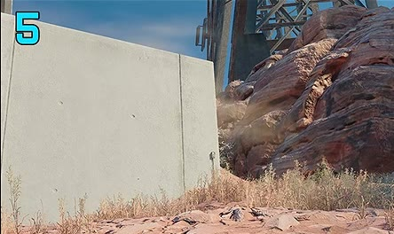
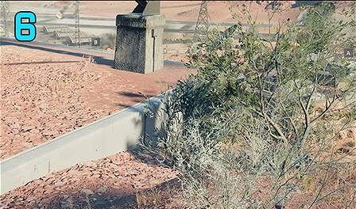
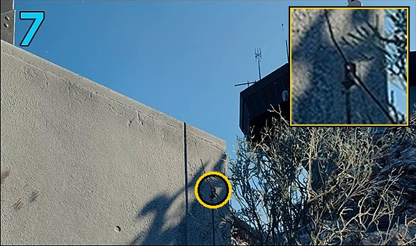
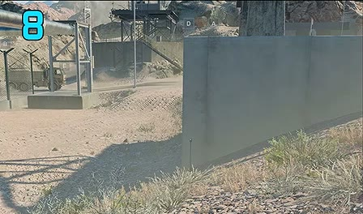
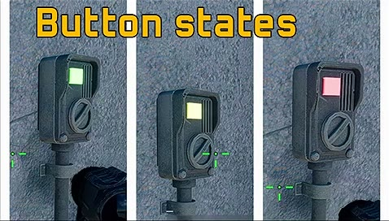
Toque na cor que cada torre está mostrando. A escolhida fica forte, com ✓. A página diz na hora quantas vezes apertar cada uma.
As torres começam apagadas. Toque na cor que a torre mostra para marcá-la como conferida; toque de novo na mesma cor para apagar.
Apertar um botão muda três luzes: a da torre e as das duas vizinhas de número. Apertar a 3 muda a 2, a 3 e a 4. A conta dá a volta: apertar a 8 muda a 7, a 8 e a 1.
Por isso a ordem dos apertos não importa, só quantas vezes cada torre é apertada. A página testa todas as combinações e mostra a de menos apertos. Toque numa torre da lista quando terminar os apertos dela, para riscá-la.
Se aparecer "não tem solução", alguma cor foi anotada errada. Confira as torres de novo: de cada três combinações de cor, duas não existem no jogo.
Quando as 8 ficam certas, as luzes passam a azul.
A regra dos três vizinhos vem da ferramenta da comunidade (link nas fontes). Conferi a conta desta página contra a dela nas 6.561 combinações de cor: as duas dão sempre a mesma resposta.
Desça ao subsolo da bandeira F. O botão da porta pequena fica verde: interaja e desça a escada.
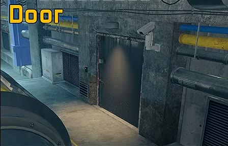
Na sala de comando, interaja com a máquina de rádio da frente, à direita. As telas grandes e os monitores dos consoles acendem.
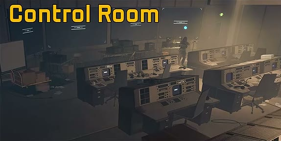
Ache o console de cada símbolo e conte as barras brancas acesas no painel acima do monitor. Marque aqui: a página monta a sequência de torres.
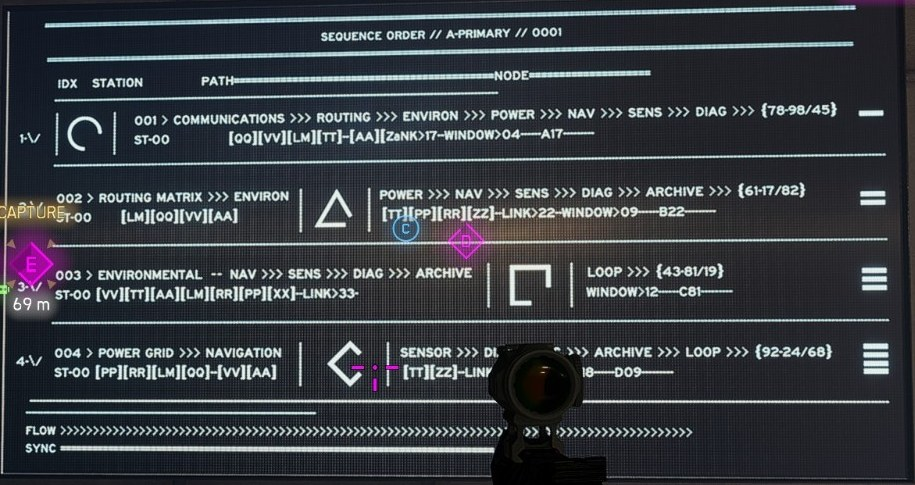
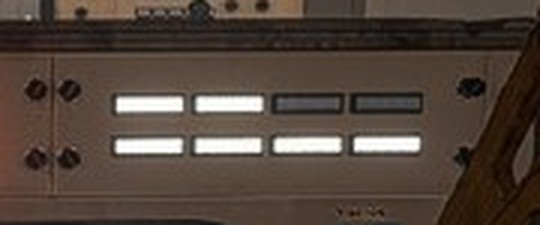
As luzes mudam a cada partida, então o código também muda. O do Danny foi 1-6-6-7-4-2-1-5; o nosso, em 15/10/2026, foi 3-4-3-4-4-6-1-4. As caixas acima vêm com o nosso como exemplo: troque pelas luzes da sua partida.
Os consoles com o mesmo número acendem sempre as mesmas barras. Isso indica que o painel mostra um número de verdade, e não luzes ao acaso.
Volte às torres e aperte na ordem da etapa 5: um aperto por número. Quando a mesma torre vier duas vezes seguidas, espere uns 3 segundos entre os apertos.
Em 15/10/2026 o enfeite estava com erro e não dava para equipar. Segundo o Danny, quem fez a etapa deve recebê-lo mais tarde. A DICE ainda não confirmou isso.
As fotos do console, do painel e da tela de sequência são da nossa partida de 15/10/2026. Os textos de onde fica cada torre foram lidos do mapa da comunidade.